Expériences / Projets
Expérience professionnelle
Studios de jeu de société
Stage - Game developper - Repos Production
J’ai effectué un stage de trois mois au sein de Repos Production, à Bruxelles, où j’ai participé au développement de plusieurs projets de jeux de société destinés à de futures sorties.
Au cours de cette expérience, j’ai pris part à différentes étapes du processus de création, notamment au game design, en contribuant à la réflexion autour des mécaniques de jeu, à leur conception et à leur amélioration. J’ai également organisé et animé de nombreuses sessions de playtests, dont les retours ont permis d’identifier des pistes d’amélioration et de travailler sur l’équilibrage ainsi que sur la fluidité et la cohérence des expériences de jeu proposées.
En parallèle, j’ai participé à des missions d’analyse de gamme et de marketing, ce qui m’a permis de mieux comprendre les enjeux éditoriaux et commerciaux liés au développement et à la commercialisation de jeux de société.
Cette expérience m’a permis de consolider ma vision globale du métier, de la conception des mécaniques à leur mise à l’épreuve auprès des joueurs, tout en me permettant de développer mes compétences en game design, en analyse et en conception d’expériences ludiques.
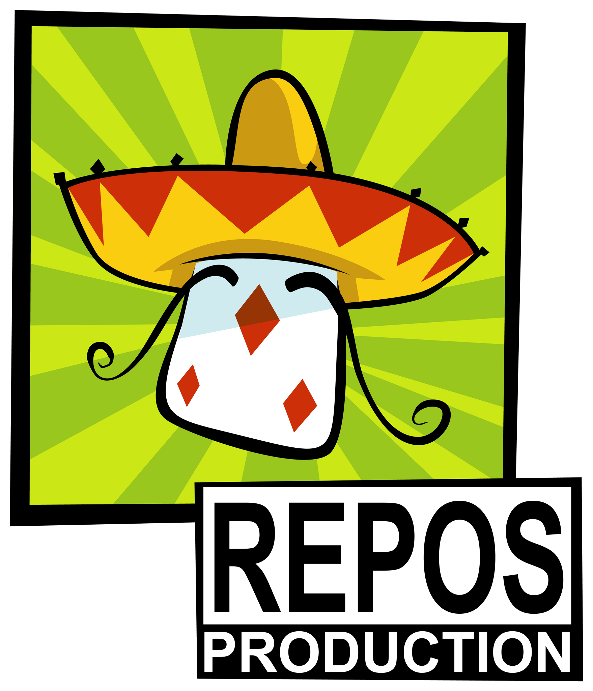
Stage - Marketing et suivi de chefferie de projet - Libellud
J’ai effectué un stage de deux mois au sein du studio Libellud, durant lequel j’ai pu découvrir plusieurs facettes de l’industrie du jeu de société, du marketing à la gestion de projet, en passant par la conception ludique.
Ma mission principale consistait à concevoir un plan marketing pour accompagner la sortie de Mysterium Refresh, une édition spéciale célébrant les dix ans du jeu original. Ce travail m’a permis de me familiariser avec les enjeux de communication et de mise en valeur d’un jeu déjà établi, tout en participant à la préparation de cette nouvelle édition.
J’ai également pris part à la réalisation d’un tournage publicitaire, en représentant Libellud et en contribuant à orienter le tournage afin de mettre en avant les éléments importants et les nouveautés de cette édition. Cette mission m’a permis de découvrir les coulisses de la production de contenus promotionnels et l’importance de la cohérence entre un produit, son identité et sa communication.
En complément, j’ai pu découvrir et participer à différentes missions liées au suivi de projet, notamment la vérification de livrables et le suivi des étapes de production. J’ai également eu l’occasion de m’initier au playtesting et au game design de prototypes, en découvrant les premières étapes de conception et d’amélioration d’un jeu.
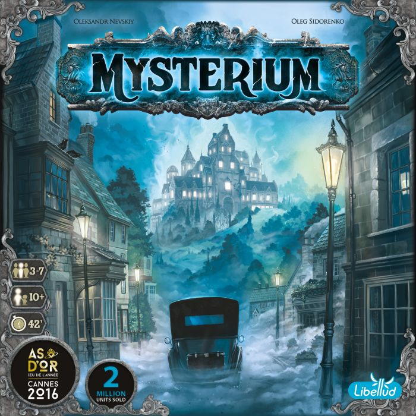
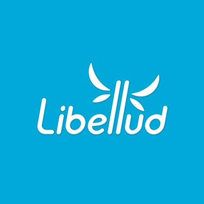
Développement informatique
Alternance Capgemini - TMA CNSA
J’ai réalisé ma troisième année de BUT Informatique en alternance au sein de Capgemini, en intégrant le projet CNSA TMA, consacré à la maintenance et à l’optimisation d’applications existantes.
Au sein d’une équipe de développeurs, j’ai participé à la maintenance et à l’évolution d’applications en Java, tout en prenant part aux différentes étapes du suivi des demandes clients. J’ai notamment contribué au ticketage et au suivi des requêtes clients, à la rédaction de documentation technique ainsi qu’à des réunions de spécification visant à clarifier les besoins et à définir les évolutions à apporter aux applications.
Cette expérience m’a également permis de découvrir les méthodes d’organisation et de coordination propres aux projets informatiques. J’ai notamment participé à la planification et au suivi des tâches au cours de sprints en méthode Agile, développant ainsi ma compréhension de la répartition du travail, du suivi de l’avancement et de la collaboration entre développeurs.
Par ailleurs, j’ai évolué dans une équipe franco-espagnole, où l’anglais était essentiel pour communiquer au quotidien avec mes collègues. Ce contexte m’a permis de renforcer ma pratique professionnelle de l’anglais et ma capacité à travailler dans un environnement international.
Cette alternance m’a permis de consolider mes compétences en développement logiciel tout en découvrant les dimensions organisationnelles et relationnelles d’un projet informatique : de la compréhension des besoins clients à leur suivi, en passant par la documentation et la coordination des tâches au sein d’une équipe.
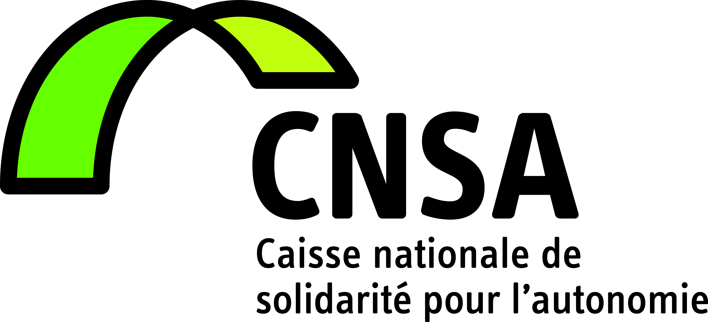
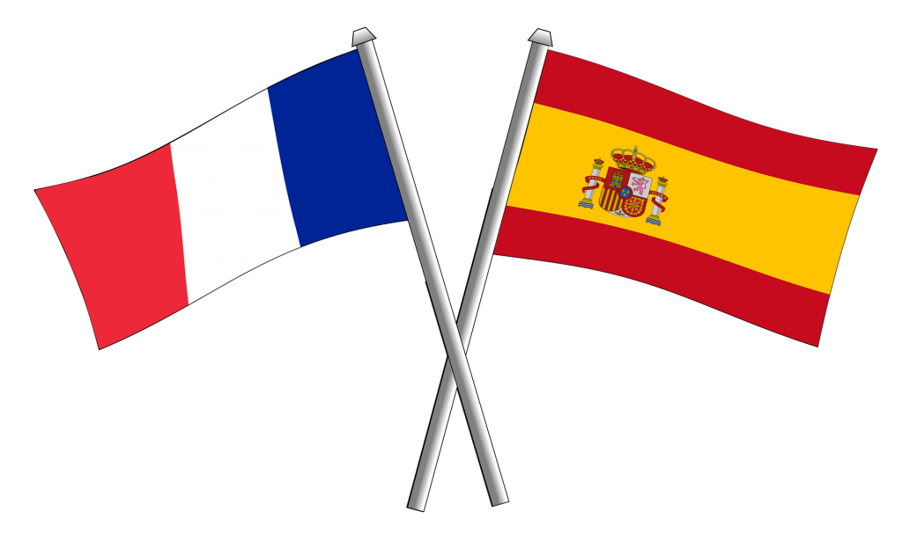
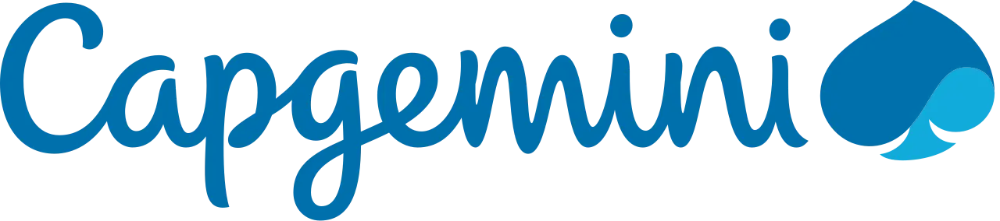
Stage - Automatisationet conteneurisation de tests - Broadpeak
Dans le cadre de mon BUT Informatique, j’ai effectué un stage de trois mois au sein de Broadpeak, avec pour mission principale l’automatisation et la conteneurisation de tests dans un environnement de développement logiciel.
J’ai notamment travaillé sur la création d’images Docker afin de conteneuriser les environnements nécessaires à l’exécution des tests, ainsi que sur la mise en place de pipelines Jenkins pour automatiser leur exécution au sein d’une chaîne d’intégration continue.
Cette expérience m’a apporté une première approche concrète des pratiques d’intégration continue et des outils DevOps, en me permettant de contribuer à l’automatisation de processus techniques et à l’amélioration de l’efficacité des cycles de développement.
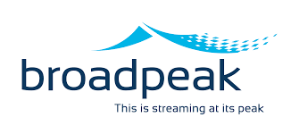
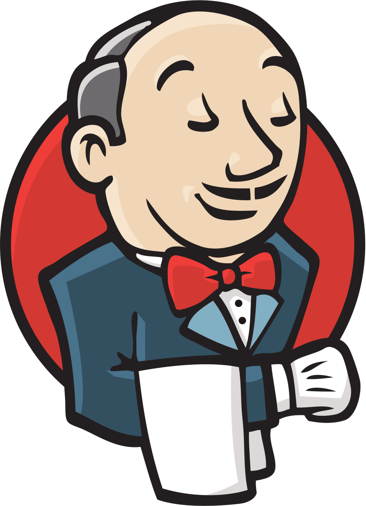
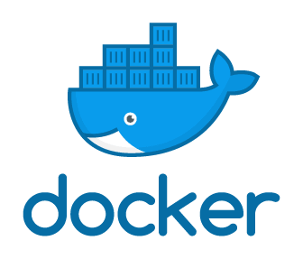
Projets réalisés
Développement d'un jeu Unity : Naughtilus
Réalisé dans le cadre de mon Master MJPL, Naughtilus est un projet de jeu vidéo mené en équipe de quatre personnes. Notre objectif était de concevoir un prototype de jeu de plateforme sous Unity, tout en développant un plan marketing et une stratégie de financement en vue de sa sortie fictive.
Le jeu explore le thème de la thalassophobie, la peur des profondeurs et de l'immensité des océans, à travers une expérience de plateforme inspirée par l'atmosphère inquiétante de Dredge et Subnautica, ainsi que par l'approche du gameplay de Limbo. Le projet cherchait ainsi à associer exploration, tension et progression dans un univers où l'environnement marin occupe une place centrale.
Étant le seul membre de l'équipe issu d'une formation informatique, j'ai endossé le rôle de chef de projet et de référent technique, en guidant les autres membres dans la réalisation du prototype et en coordonnant notre travail collectif.
J'ai pris en charge la majeure partie de la programmation des scripts sous Unity, tout en assurant la gestion du projet et le suivi du code à l'aide de Git. Cette double responsabilité m'a permis de conjuguer développement technique, organisation du travail et accompagnement d'une équipe aux profils complémentaires.
En parallèle du développement, nous avons élaboré un budget prévisionnel, construit un plan de financement reposant sur une campagne de crowdfunding et défini un plan marketing afin d'étudier les possibilités de promotion et de commercialisation du jeu.
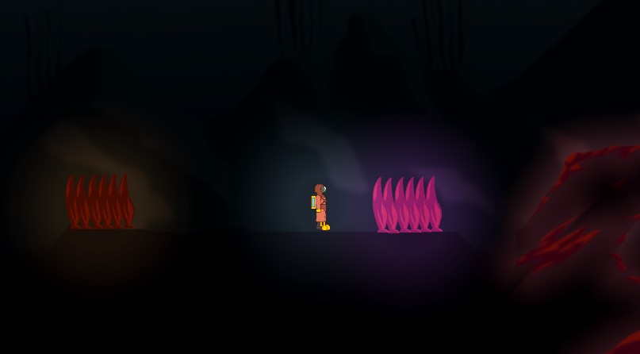
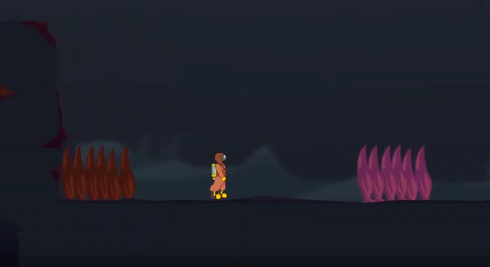
Développement d'un jeu de société : As Eikrom Wills It
Réalisé dans le cadre de mon BUT Informatique, As Eikrom Wills It est un projet personnel de création de jeu de société conçu intégralement en anglais. L'objectif était d'imaginer une expérience ludique mêlant plusieurs mécaniques que j'apprécie particulièrement : l'élimination de joueurs, les rôles cachés et le deck-building.
Le jeu plonge les joueurs dans un univers occulte Lovecraftien où des cultistes tentent de réveiller l'ancien dieu Eikrom, tandis qu'un paladin infiltré cherche secrètement à les éliminer avant l'accomplissement du rituel.
J'ai travaillé sur la conception des mécaniques de jeu, la rédaction des règles complètes en anglais et la création de nombreux concepts de cartes, en cherchant à faire cohabiter construction de deck, interactions entre joueurs et objectifs asymétriques au sein d'un même système de jeu.
Le projet a abouti à un prototype comprenant une base de règles structurée et plusieurs concepts de cartes. Il reste toutefois à approfondir les phases de playtesting et d'équilibrage afin d'affiner les mécaniques, d'ajuster les interactions entre les rôles et de consolider l'expérience de jeu.
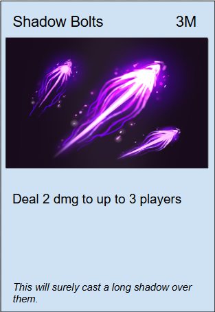
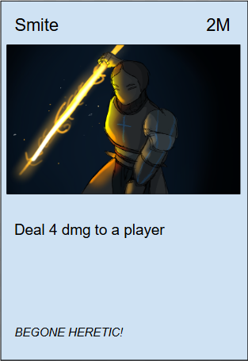
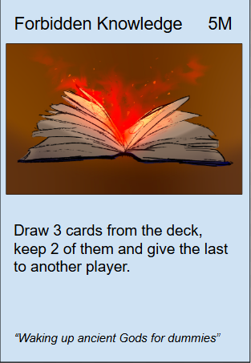